Home & menu
Find today's training, your streak and program progress. Open the menu to explore everything GymClues offers.
Download this video ↓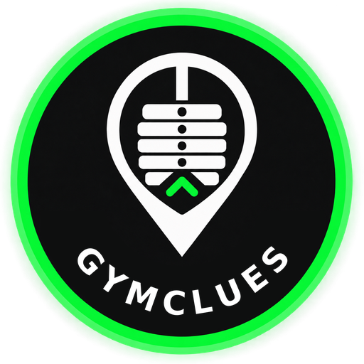
GymCluesGymClues brings workout programs, muscle maps and equipment guides to your Android phone.
Understand the movement.
See the muscles you're targeting, the muscles helping and the ones keeping you steady.
Explore muscle mapping ↗Interactive user guide
Pick a lesson and follow the arrows on real GymClues 4.5 screens from the Nov 14 Android release. You can also use the step buttons or read the instructions below.
No install needed · Nothing is saved
The screenshot could not load. You can still follow the written steps.
Three guided walkthroughs, 45 seconds each. Follow the hand from your first program to your next rest day.
Find today's training, your streak and program progress. Open the menu to explore everything GymClues offers.
Download this video ↓Choose a training style, review a routine, pick your start date and confirm your assignment.
Download this video ↓Open today's assigned session from Home, start your workout, or take a rest day. Choose weekdays to repeat automatically.
Download this video ↓See Ocean, Ember, Rosewood and Daylight, then return to GymClues Default. This walkthrough has no narration.
Download this video ↓These are the original GymClues demo recordings and may show an earlier layout. Guided videos include a hand pointer, feature highlights and AI-generated English narration. The theme tour is silent. Use the player's fullscreen control for a closer look.
Browse the original feature gallery. The interactive guide above uses screenshots captured from the Nov 14 APK.
Your Home screen keeps today's workout and program progress together. Open a session, review the exercises and start when you're ready.
Every preview links to the original screenshot so you can inspect the details.
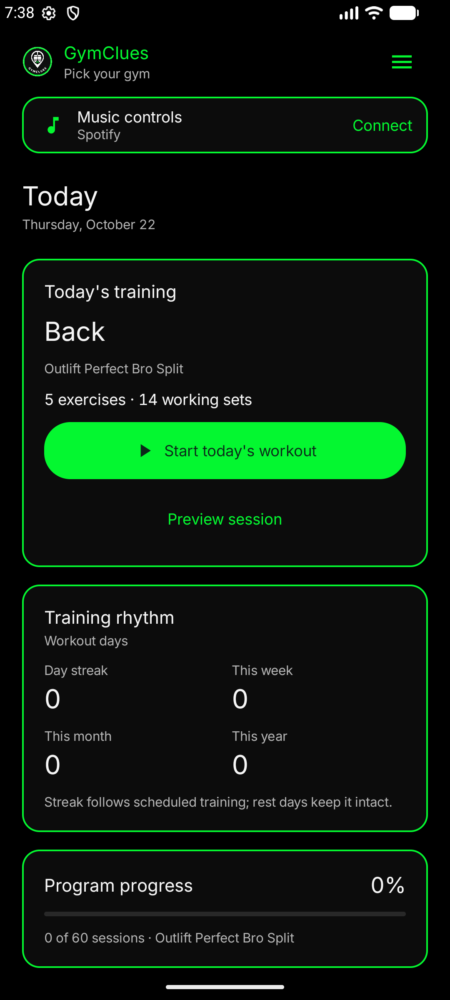
Today's workout, training rhythm and your assigned program's progress, together.
Open full-size screenshot ↗Review exercises, sets, reps and rest periods before you start.
Open full-size screenshot ↗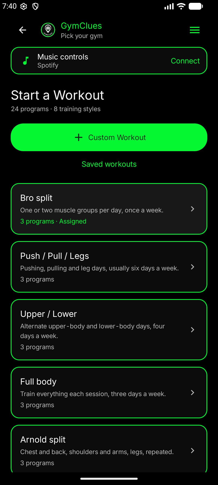
Browse training styles and routines, or build your own workout.
Open full-size screenshot ↗Identify target muscles, assisting movers and stabilizers for each exercise.
Open full-size screenshot ↗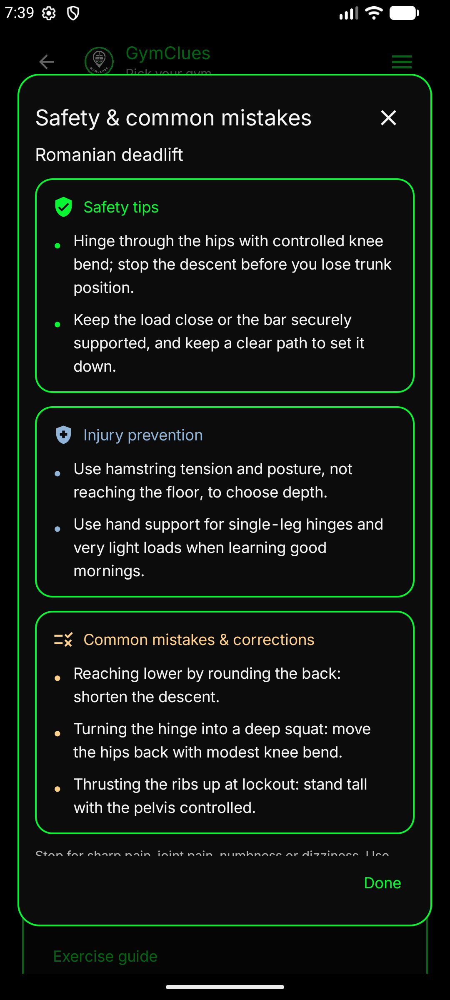
Safety tips, injury prevention and common mistakes to avoid.
Open full-size screenshot ↗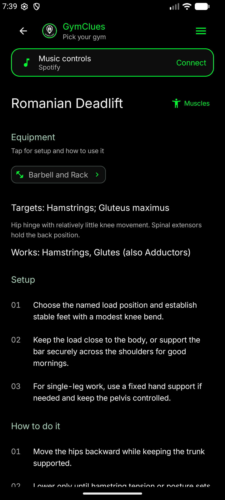
Equipment, setup and step-by-step movement instructions.
Open full-size screenshot ↗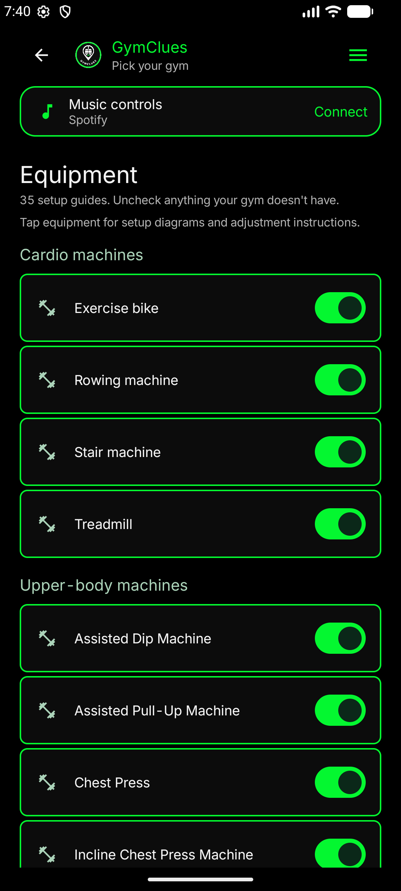
Cardio and strength equipment, grouped by machine type.
Open full-size screenshot ↗Numbered controls, safe positioning and adjustment instructions.
Open full-size screenshot ↗Choose GymClues Default, Ocean, Ember, Rosewood or Daylight. Your choice stays saved in the app.
Black & logo green
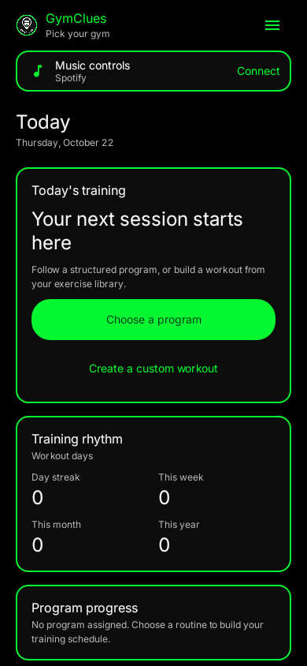
Deep teal & aqua
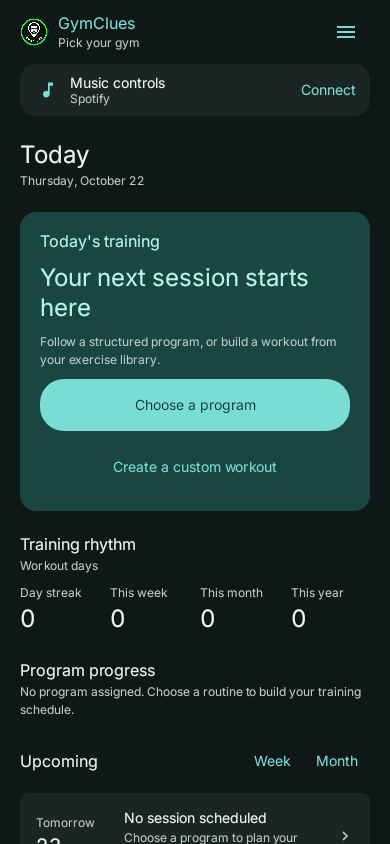
Charcoal & apricot
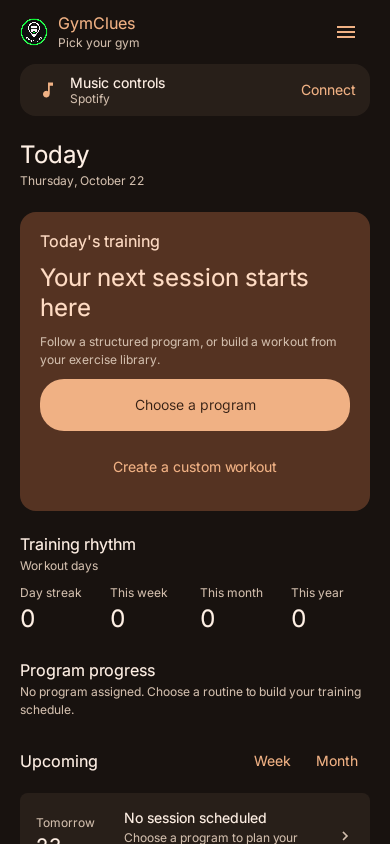
Burgundy & blush
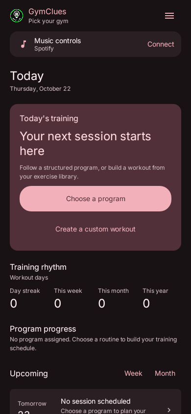
Warm ivory & pine
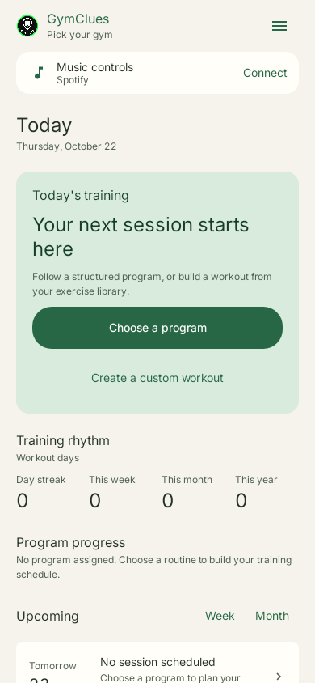
Get GymClues free for Android. Workout programs, exercise guidance and room for rest.
Download the Nov 14 APK Direct APK download for Android.